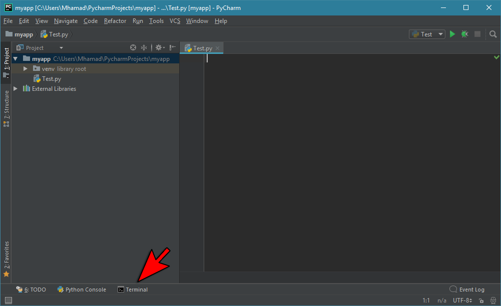
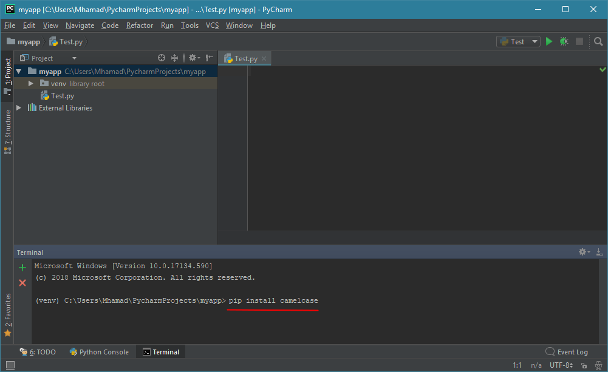
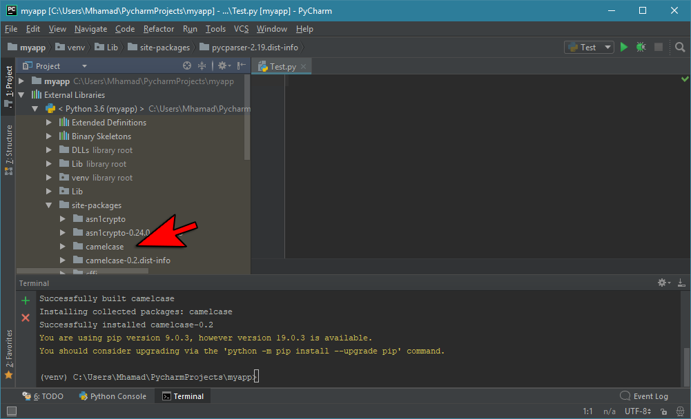
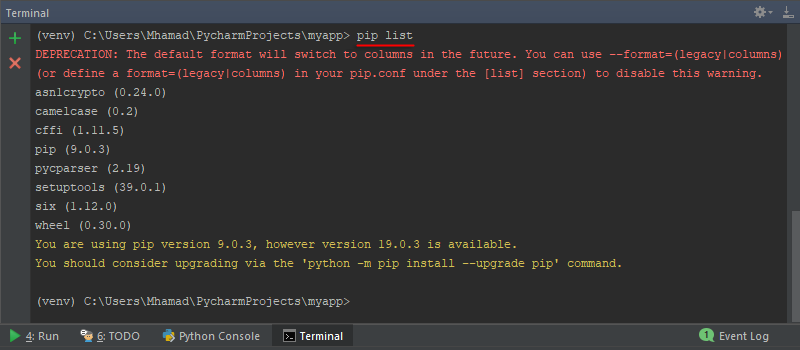
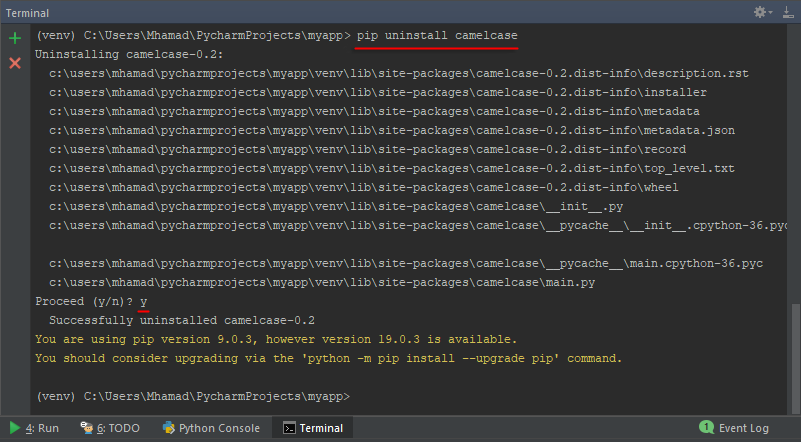

Pythonمدير الحزم PIP في بايثون
مفهوم الـ PIP في بايثون
في أي مشروع تبنيه بلغة بايثون فإنك على الأرجح ستقوم باستخدام كلاسات و دوال جاهزة قام ببناءها مطورون آخرون حتى لا تضيع وقتك في بناء كل شيء من الصفر.
في هذا الدرس ستتعلم كيف تقوم بتضمين أكواد جاهزة في مشاريعك بكل سهولة بالإعتماد على أداة إسمها PIP بالإضافة إلى فعل ذلك بشكل مباشر من برنامج PyCharm.
الآن, بما أنك شخص واحد من ضمن ملايين الأشخاص الذين قرروا إستخدام لغة بايثون في بناء مشاريعهم, فهذا يعني أن مطورين كثر قاموا حتماً ببناء أكواد جاهزة و نشرها مجاناً حتى يستفيد منها باقي المطورين مع الإستمرار في تحديث هذه الأكواد حتى تظل تتوافق مع التحديثات المستمرة للغة بايثون و لمعالجة أي ثغرات في هذه الأكواد.
المطور الذي يعمل بطريقة إحترافية, يقوم في العادة ببناء الموديول بنفس الطريقة التي تعلمتها سابقاً. أي يقوم بإنشاء ملف بايثون و بداخله يقوم بتعريف الكلاسات و الدوال إلخ..
و طبعاً لا شيء يمنع المطور من أن يقوم بإنشاء أكثر من موديول, أو أن يقوم بتضمين موديول آخر في الموديول الذي يقوم بتطويره.
عندما يقوم المطور بتجميع الملفات التي يعدّها في مجلد واحد لجعلها قابلة للتحميل و التضمين بسهولة فإن هذا المجلد يقال له حزمة ( Package ).
الأداة PIP تساعدك في تحميل و تضمين أي حزمة تريد في مشاريعك بكل سهولة بدل أن تضطر إلى أن تبحث عنهم بنفسك في النت.
معلومة تقنية
إبتداءاً من الإصدار 3.4 من لغة بايثون, أصبحت الأداة PIP يتم تنصيبها عنك بشكل تلقائي أثناء تنصيب لغة بايثون.
أي إذا كنت تستخدم هذا الإصدار أو إصدار أعلى من لغة بايثون, فلا حاجة لأن تقوم بتحميلها, بل و بإمكانك إستخدامها فوراً.
في حال كنت تستخدم إصدار قديم من لغة بايثون, فهذا هو الموقع الرسمي pypa.io لتحميل هذه الأداة.
في هذا الموقع أيضاً ستجد الخطوات التي يجب إتباعها لتحميلها و تنصيبها بشكل صحيح على الحاسوب.
الموقع الرسمي لتحميل الحزم
في هذا الموقع pypi.org تجد جميع الحزم التي يمكنك تنصيبها بواسطة الأداة PIP.
طريقة معرفة ما إن كانت الأداة PIP منصبة على الحاسوب
للتأكد ما إن كانت الأداة PIP منصبة على الحاسوب يمكنك محاولة عرض إصدار النسخة المنصبة منها كالتالي:
قم بفتح موجه الاوامر.
أكتب الأمر python -m pip --version
ثم أنقر على الزر Enter
في المثال التالي, قمنا بفتح موجه الأوامر و كتابة python -m pip --version فيه.
لاحظ أنه أخبرنا أن رقم إصدار أداة الـ PIP المنصبة على الحاسوب هو 9.0.1.
Command Prompt
> python -m pip --version
pip 9.0.1 from C:\Users\Mhamad\AppData\Local\Programs\Python\Python36-32\lib\site-packages (python 3.6)
>
بما أن الأداة PIP موجودة على الحاسوب, فهذا يعني أنه يمكننا استخدامها لتحميل أي حزمة نريد.
ملاحظة
في حال كنت لا تعرف كيف تفتح موجه الأوامر راجع الفقرة الثانية من الدرس الثاني لأنه سبق أن شرحنا هذا الأمر فيها.
التعامل مع الأداة PIP في بايثون
في البداية قبل أن تفكر في التعامل مع هذه الأداة, تأكد من أن يكون جهازك متصل بالنت لأن هذه الأداة تقوم بتحميل الحزمات لك من النت.
و بالتالي إذا حاولت استخدامها و لم يكن جهازك متصل بالنت سيظهر لك خطأ.
الآن, للتعامل مع الأداة PIP يوجد ثلاث طرق أساسية:
يمكنك إستخدام موجه الأوامر الموجود في نظام التشغيل, و هذا الأمر لا ننصحك به كمبتدئ.
يمكنك إستخدام موجه الأوامر الموجود في برنامج PyCharm.
يمكنك إستخدام مدير الحزم الموجودة في برنامج PyCharm.
تحميل حزمة بواسطة موجه الأوامر الموجود في برنامج PyCharm
في المثال التالي سنقوم بتحميل حزمة إسمها camelcase باستخدام موجه الأوامر الموجود في برنامج PyCharm.
لفتح موجه الأوامر, أنقر على كلمة Terminal كالتالي.

الآن قم بكتابة pip install camelcase ثم أنقر على الزر Enter كالتالي.

أي حزمة تقوم بتحميلها سيتم وضعها في المجلد site-packages الموجود في المجلد External Libraries كالتالي.

ملاحظة: التنبيه الذي يظهر في اللون الأصفر, معناه أنه يوجد إصدار أحدث للأداة PIP, و لتحديث إصداره أكتب فقط الأمر python -m pip install --upgrade pip.
تحميل حزمة بواسطة مدير الحزم الموجود في برنامج PyCharm
لمعرفة طريقة إستخدام مدير الحزم الموجود في برنامج PyCharm لتنصيب أي حزمة بدون الحاجة لكتابة أوامر, إفعل التالي:
إبحث في يوتيوب عن Install Package in Pycharm. ثم قم بمشاهدة أي فيديو يظهر لك في نتائج البحث.
تضمين الحزمة التي تم تنصيبها في بايثون
بعد تنصيب الحزمة, تصبح قادر على تضمينها و استخدامها كأي حزمة أخرى موجودة على جهازك.
في المثال التي قمنا باستخدام الحزمة camelcase التي قمنا بتنصيبها منذ قليل.
هذه الحزمة تحتوي على كلاس إسمه CamelCase و الذي بدوره يحتوي على دالة إسمها hump() التي تحول أول حرف في كل كلمة لحرف كبير Capital Letter.
مثال
Test.py
# camelcase هنا قمنا بتضمين كل محتوى الحزمة
import camelcase
# camelcase الموجود في الحزمة CamelCase هنا قمنا بإنشاء كائن من الكلاس
c = camelcase.CamelCase()
# عليه hump() هنا قمنا بتعريف النص الذي سنقوم بتجربة الدالة
txt = "python is an easy language to learn."
# لترجع نسخة من النص الموجود في المتغير c من الكائن hump() هنا قمنا باستدعاء الدالة
# مع تحويل أول حرف في كل كلمة لحرف كبير. بعدها قمنا بطباعة ما سترجعه الدالة txt
print(c.hump(txt))
•سنحصل على النتيجة التالية عند التشغيل.
Python is An Easy Language To Learn.
ملاحظة
طريقة تنصيب, تضمين و استخدام الحزمة camelcase التي تعملتها الآن تنطبق على أي حزمة أخرى سنقوم بتضمينها في المستقبل.
طريقة عرض جميع الحزمات المنصبة المشروع في بايثون
لعرض جميع الحزمات التي قمت بتثبيتها و الموجودة أصلاً في المشروع, أكتب الأمر pip list في موجه الأوامر كالتالي.

طريقة إلغاء تثبيت الحزمة التي تم تنصيبها سابقاً في بايثون
لإلغاء تثبيت أي حزمة قمت بتثبيتها سابقاً, يمكنك استخدام الأمر pip uninstall.
إذاً, لإلغاء تثبيت الحزمة camelcase التي قمنا بتحميلها سابقاً, نكتب الأمر pip uninstall camelcase في موجه الأوامر ثم ننقر على الزر Enter.
نلاحظ أنه يعرض لنا مسار جميع ملفات الحزمة التي سيتم إلغاءها, ثم يخبرنا إذا كنا متأكيد من أننا نريد حذف الحزمة أم لا.
الآن, للموافقة على إلغاء الحزمة, نكتب الحرف y ثم ننقر على الزر Enter.


 محرر الويب
محرر الويب نظام الألوان
نظام الألوان محول الوحدات
محول الوحدات محلل عناوين الشبكات
محلل عناوين الشبكات